먼저 생각해 보세요.
Ich spiele gern Fußball.에서 '좋아한다'는 뜻을 나타내는 낱말은 무엇일까요?
동사 뒤에 gern을 붙이면 그 일을 좋아한다는 뜻이 돼요.
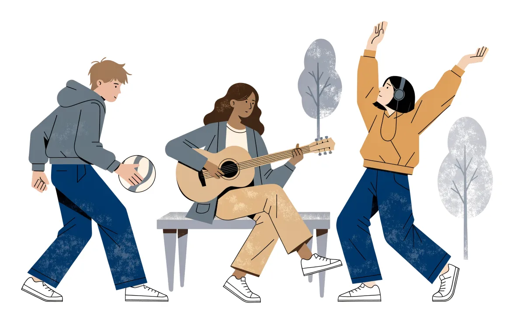
수업이 끝났어요. 친구들이 공원에서 저마다 좋아하는 것을 해요.
눌러서 들어 보세요.
먼저 생각해 보세요.
Ich spiele gern Fußball.에서 '좋아한다'는 뜻을 나타내는 낱말은 무엇일까요?
동사 뒤에 gern을 붙이면 그 일을 좋아한다는 뜻이 돼요.
Lektion 4의 낱말 다섯 개를 다시 떠올려 보세요.
문법 gern, nicht gern, lieber, Verben mit Vokalwechsel (lesen, fahren, treffen), wir, ihr, sie
이 과를 마치면 내 취미를 소개하고 친구에게 같이 하자고 말할 수 있어요.
수업이 끝나고 공원으로 가는 길이에요.
들으면서 찾아보세요. Yuna는 축구와 수영 가운데 무엇을 더 좋아하나요?
금요일 쉬는 시간이에요. 친구들이 토요일 계획을 이야기해요.
들으면서 찾아보세요. 친구들은 토요일 몇 시에 만나나요?
두 대화를 듣고 답하세요.
Yuna tanzt gern.
Yuna spielt gern Fußball.
Yuna는 nicht so gern이라고 했어요. 수영을 더 좋아해요.
Emma fährt gern Rad.
Elif가 만화 읽기보다 더 좋아하는 것은 무엇인가요?
Elif와 Yuna는 토요일에 무엇을 하나요?
친구들은 몇 시에 만나나요?
낱말 22개예요. 낱말이나 예문 앞의 단추를 누르면 소리가 나요. 명사는 der, die, das를 색으로 구분했어요.
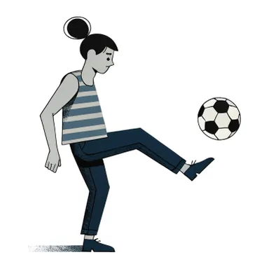
Fußball spielen 축구를 하다
Lukas spielt gern Fußball.Lukas는 축구하는 걸 좋아해요.
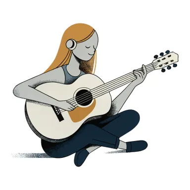
Gitarre spielen 기타를 치다
Elif spielt gern Gitarre.Elif는 기타 치는 걸 좋아해요.
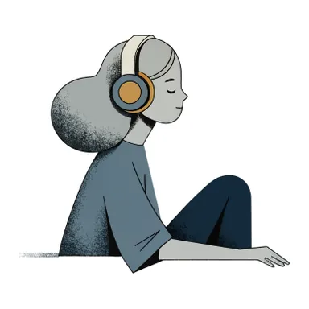
Musik hören 음악을 듣다
Ich höre gern Musik.나는 음악 듣는 걸 좋아해요.
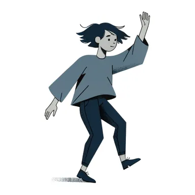
tanzen 춤추다
Yuna tanzt gern.Yuna는 춤추는 걸 좋아해요.
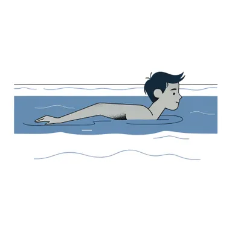
schwimmen 수영하다
Ich schwimme lieber.나는 수영이 더 좋아요.
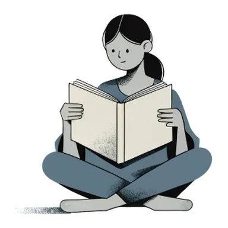
lesen (du liest, er liest) 읽다
Emma liest gern Bücher.Emma는 책 읽는 걸 좋아해요.
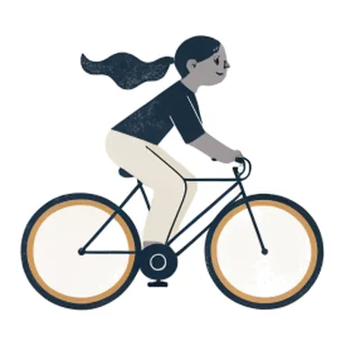
Rad fahren (du fährst, er fährt) 자전거를 타다
Emma fährt gern Rad.Emma는 자전거 타는 걸 좋아해요.
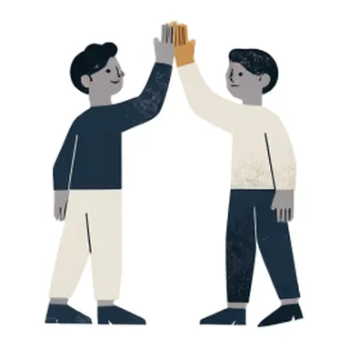
Freunde treffen (du triffst, er trifft) 친구를 만나다
Wir treffen Freunde in der Stadt.우리는 시내에서 친구들을 만나요.
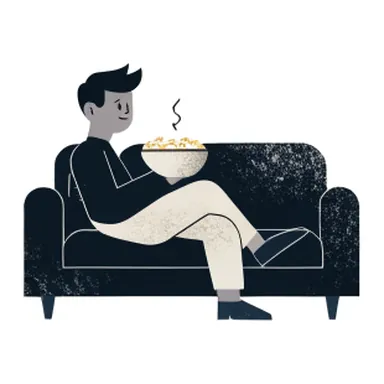
Filme sehen (du siehst, er sieht) 영화를 보다
Siehst du gern Filme?너는 영화 보는 걸 좋아해?
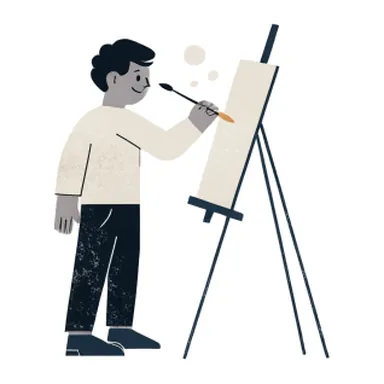
malen 그림을 그리다
Lukas malt gern.Lukas는 그림 그리는 걸 좋아해요.
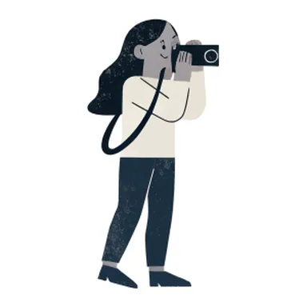
fotografieren 사진을 찍다
Ich fotografiere gern.나는 사진 찍는 걸 좋아해요.
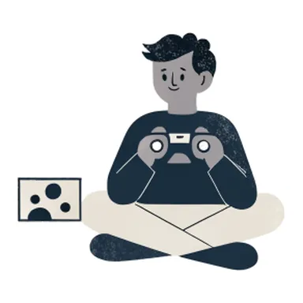
Computerspiele spielen 컴퓨터 게임을 하다
Tim spielt gern Computerspiele.Tim은 컴퓨터 게임을 좋아해요.
das Hobby, die Hobbys 취미
Mein Hobby ist Tanzen.내 취미는 춤이에요.
machen 하다, 만들다
Was machst du gern?너는 뭘 하는 걸 좋아해?
gern 즐겨, 좋아해서
Ich tanze gern.나는 춤추는 걸 좋아해요.
lieber 더 좋아해서
Ich fahre lieber Rad.나는 자전거 타는 게 더 좋아요.
Kommst du mit? 같이 갈래?
Wir spielen Fußball. Kommst du mit?우리 축구해. 같이 갈래?
die Zeit, die Zeiten 시간
Ich habe keine Zeit.나는 시간이 없어요.
zusammen 함께
Wir lernen zusammen Deutsch.우리는 함께 독일어를 공부해요.
der Park, die Parks 공원
Wir spielen Fußball im Park.우리는 공원에서 축구를 해요.
die Stadt, die Städte 도시, 시내
Wir treffen Freunde in der Stadt.우리는 시내에서 친구들을 만나요.
jeden Tag 날마다
Sie spielen jeden Tag.그들은 날마다 해요.
이 과의 낱말로 여덟 문제를 풀어요.
예문을 보고 답해 보세요.
gern은 문장에서 어디에 있나요?
규칙
좋아하는 일을 말할 때는 그 일을 나타내는 동사 뒤에 gern을 붙여요. 좋아하지 않으면 nicht gern, 더 좋아하면 lieber를 써요.
| 뜻 | 문장 |
|---|---|
| 좋아해요 | Ich spiele gern Fußball. |
| 좋아하지 않아요 | Ich spiele nicht gern Fußball. |
| 더 좋아해요 | Ich spiele lieber Basketball. |
주의 한국어처럼 '좋아하다'라는 동사를 따로 쓰지 않아요. spielen, tanzen, lesen처럼 하는 일을 나타내는 동사에 gern만 더하면 돼요.
예문을 보고 답해 보세요.
lesen은 du와 함께 쓰면 어떤 모양이 되나요?
규칙
몇몇 동사는 du와 er, sie에서 모음이 바뀌어요. e는 i나 ie로, a는 ä로 바뀌어요. ich에서는 바뀌지 않아요.
| lesen | sehen | treffen | fahren | |
|---|---|---|---|---|
| ich | lese | sehe | treffe | fahre |
| du | liest | siehst | triffst | fährst |
| er, sie | liest | sieht | trifft | fährt |
주의 낱말 목록에는 모음이 바뀌는 동사 옆에 du와 er 형태를 함께 적었어요. 그 모양 그대로 외우는 것이 가장 빨라요.
예문을 보고 답해 보세요.
ihr가 주어일 때 동사는 어떻게 끝나나요?
규칙
wir(우리)와 sie(그들)는 동사가 -en으로 끝나고, ihr(너희)는 -t로 끝나요. 모음이 바뀌는 동사도 여기서는 바뀌지 않아요.
| spielen | fahren | haben | sein | |
|---|---|---|---|---|
| wir | spielen | fahren | haben | sind |
| ihr | spielt | fahrt | habt | seid |
| sie | spielen | fahren | haben | sind |
주의 sie는 '그녀'일 때도 있고 '그들'일 때도 있어요. 동사의 끝을 보면 알 수 있어요. Sie spielt는 그녀, Sie spielen은 그들이에요.
대화를 듣고 답하세요.
Im Park
Lukas Was machst du am Sonntag, Elif?
Elif Ich spiele Gitarre. Und du?
Lukas Ich treffe Tim. Wir sehen Filme. Kommst du mit?
Elif Ja, gern! Wann?
Lukas Um vier Uhr.
Elif는 일요일에 무엇을 하려고 했나요?
Lukas는 누구를 만나나요?
두 사람은 몇 시에 만나나요?
듣고 알맞은 것을 고르세요.
Yuna가 더 좋아하는 것은 무엇인가요?
Ich schwimme lieber.
Emma는 만화 읽는 것을 어떻게 생각하나요?
Ich lese nicht gern Comics.
Lukas와 친구들은 얼마나 자주 축구를 하나요?
Wir spielen jeden Tag Fußball.
반 채팅을 읽고 답하세요.
Klassenchat 8b
Wer kommt am Samstag mit? Wir spielen Fußball im Park!
Ich nicht. Ich spiele nicht gern Fußball. Ich höre lieber Musik.
Ich komme mit! Wann spielt ihr?
Um zwei Uhr.
Ich komme auch. Ich fotografiere gern. Ich mache Fotos!
Elif spielt gern Fußball.
Elif는 축구를 좋아하지 않아요. 음악 듣는 것을 더 좋아해요.
Emma kommt mit.
Wann spielen sie Fußball?
Was macht Yuna im Park?
모음이 바뀌는 동사예요. 알맞은 형태를 고르세요.
du gern Comics?
Emma gern Rad.
Lukas am Samstag Tim.
du gern Filme?
Ich gern Bücher.
Elif gern Comics.
wir, ihr, sie에 맞는 동사 형태를 고르세요.
Wir Fußball im Park.
Was ihr am Samstag?
Lukas und Tim jeden Tag.
ihr mit?
Wir gern Rad.
Yuna und Elif Freunde.
낱말을 순서대로 눌러 문장을 만드세요.
나는 축구하는 걸 좋아해.
나는 만화 읽는 걸 좋아하지 않아.
나는 자전거 타는 게 더 좋아.
너는 뭘 하는 걸 좋아해?
독일어와 뜻을 짝지으세요.
듣고 그대로 써 보세요.
Was machst du gern? 너는 뭘 하는 걸 좋아해?
Ich höre gern Musik. 나는 음악 듣는 걸 좋아해.
Kommt ihr mit? 너희도 같이 갈래?
Was machst du gern? 넌 뭘 하는 걸 좋아해?
Ich … gern. 나는 …하는 걸 좋아해.
Mein Hobby ist … 내 취미는 …야.
Ich … nicht gern. 나는 …하는 걸 좋아하지 않아.
Ich … lieber. 나는 …하는 게 더 좋아.
Wir spielen Fußball. Kommst du mit? 우리 축구해. 같이 갈래?
Ja, gern! 응, 좋아!
Nein, danke. Ich habe keine Zeit. 아니, 괜찮아. 시간이 없어.
대화 B에서 역할을 하나 고르세요. 상대의 말은 음성으로 나오고, 내 차례에는 직접 말해요.
좋아하는 일, 좋아하지 않는 일, 더 좋아하는 일을 ich에 맞는 동사 형태로 적으세요. 완성된 문장을 소리 내어 읽어 보세요.
Ich tanze gern.
Ich schwimme nicht gern.
Ich lese lieber.
Und du? Was machst du gern?
Meine Hobbys
내 취미를 소개하는 글을 써 보세요. 좋아하는 것, 좋아하지 않는 것, 주말에 하는 것을 넣어요.
Ich tanze gern und ich höre gern Musik. Ich spiele nicht gern Fußball. Ich schwimme lieber. Am Samstag treffe ich Freunde in der Stadt. Und du? Was machst du gern?
다 쓴 뒤에 확인해 보세요.
Ich kann über Hobbys sprechen.취미를 묻고 답할 수 있어요.
Ich kann sagen, was ich gern und nicht gern mache.좋아하는 것과 좋아하지 않는 것을 말할 수 있어요.
Ich kann Freunde fragen: Kommst du mit?친구에게 같이 하자고 말할 수 있어요.